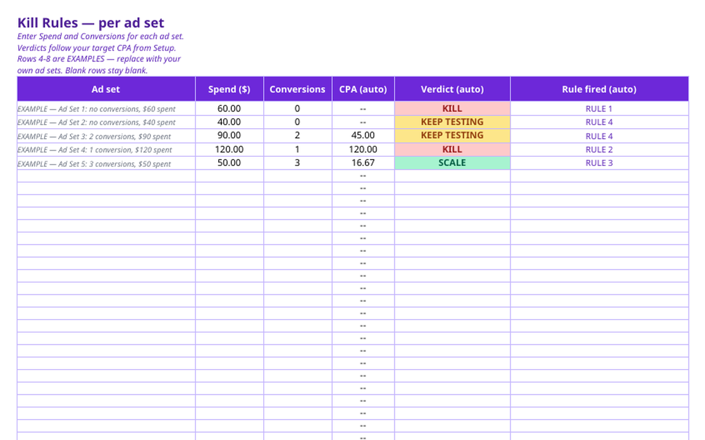
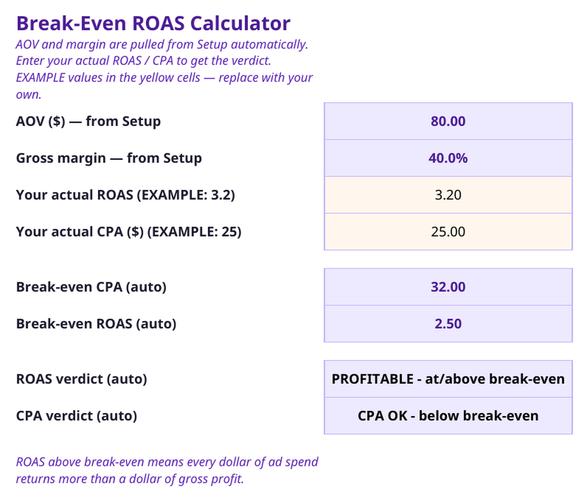

Kill or Scale an Ad on the Numbers
No gut feeling, no sunk-cost excuses: a kill-or-scale decision from the ad's own numbers.
$29 one-time
Buy on GetlyBuy on SellApp
The problem
An ad that is losing money feels hard to kill — you already spent on it, and “it might turn around.” So it keeps spending. The sunk cost is gone either way; the only question is what the next dollar earns.
How it works
- Enter the ad's real numbers: spend, leads, sales, and what each sale is worth.
- Compare against breakeven and your kill rules — the sheet shows KILL or SCALE.
- Size the testing budget before you launch, so a test has a defined end.
- Log the decision and the reason, so you stop re-litigating the same ad.
Inside the tool


What’s inside
13 files: decision workbook, kill rules, breakeven calculator, testing-budget planner, quick-start, and an 8-case worked battery.
Honest limits
A decision system, not a promise of profit. One worked case in the guide is a sourced public autopsy (Thareja, 2026-09-30); your ads are judged on your own numbers.
Try it, then buy it
Buy on Getly — $29Buy on SellApp
Product page on GitHub